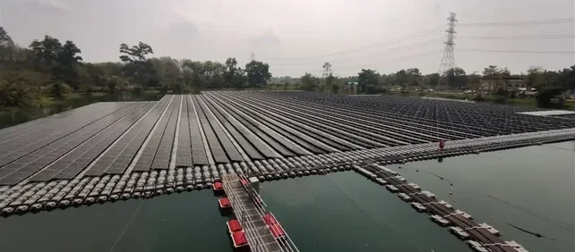

พลังงาน · Solar · Power Monitoring
Solar Power Plant Monitoring and Control System
ติดตามและบริหารการใช้พลังงานหน้างานอย่างรู้ค่า เพื่อลดต้นทุนแฝงและสร้างความยั่งยืนให้สิ่งแวดล้อม
Smart Power Monitoring · FacZero ติดตามพลังงานและคาร์บอนฟุตพรินต์ เพื่อลดต้นทุนและรายงาน ESG
ที่มาของคำอธิบาย · artroninnovative.co.th และโมดูล FacZero บน Factory Pro
รอข้อมูลเคส ยังไม่มีตัวเลขผลลัพธ์หรือรายละเอียดไซต์ที่เปิดเผยได้